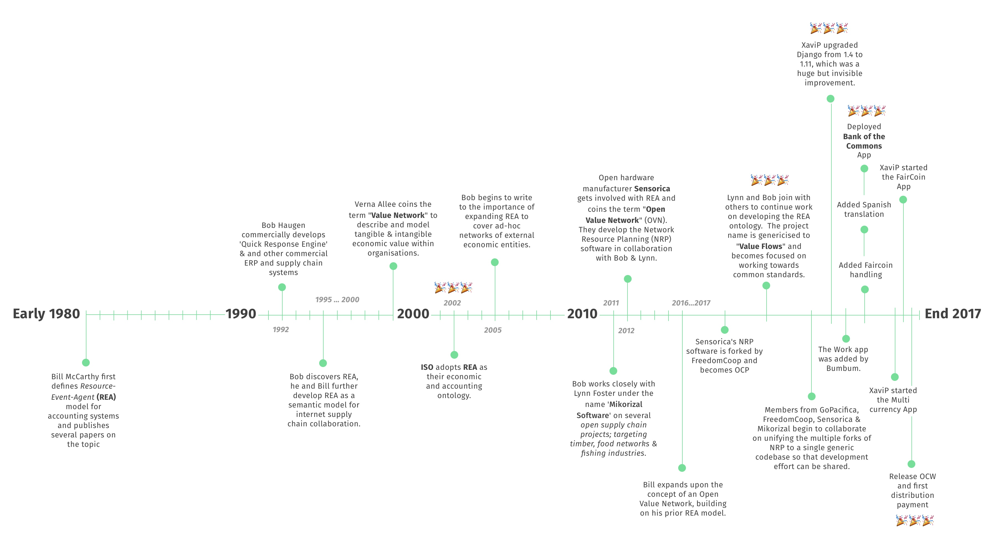

History
 Much work has been done on the OVN protocol and related specifications by many contributors too numerous to list here. An extremely brief history goes as follows- follow the links to learn more about the theory and concepts behind OVNs.
- Early 1980s: Bill McCarthy first defines Resource-Event-Agent (REA) model for accounting systems and publishes many papers on the topic.
- Mid 1990s: Bob Haugen commercially develops 'Quick Response Engine' & becomes interested in supply chain systems.
- 1995-2000: Bob discovers REA, he and Bill further develop REA as a semantic model for internet supply chain collaboration.
- 2000: Verna Allee coins the term "Value Network" to describe and model tangible & intangible economic value within organisations.
- 2002: ISO adopts REA as their economic and accounting ontology.
- 2005: Bob begins to write about the importance of expanding REA to cover ad-hoc networks of external economic entities.
- 2005-2011: Bob works closely with Lynn Foster under the name 'Mikorizal Software' on several open supply chain projects; targeting timber, food networks & fishing industries.
- 2012: Open hardware manufacturer Sensorica gets involved with REA and coins the term "Open Value Network" (OVN). They develop the Network Resource Planning (NRP) software in collaboration with Bob & Lynn. This is the first iteration of the software on which django-rea and its forks are based.
- NRP system architecture presentation (mandatory reading!)
- Value equations explainer
- 2013 - Joshua Vial of Enspiral proposes an Open App Ecosystem. Mikey Williams proposes a common method of inter-app communication which settles on Json-LD and Linked Open Data.
- 2014 - Lynn Foster, Elf Pavlik, Mikey Williams, and Jon Richter start the Value Flows project to develop a common vocabulary for apps in economic networks using Linked Open Data. Other people arrive and help, including Kalin Maldzhanski, Paul Mackay, and Elio Qoshi.
- 2016: Bill expands upon the concept of an Open Value Network, building on his prior REA model.
- Q1 2016: Sensorica's NRP software is forked by FreedomCoop and becomes OCP (Open Collaboration Platform). Many updates are made and integrations with digital currencies (FairCoin) begin.
Q3 2016: Another fork of NRP is made by GoPacifica and further development continues on that project.
2016-2017 Lynn and Bob join with others to continue work on developing the REA ontology, incorporating learnings from prior projects & concepts, including NRP & OVN, as well as others. The project name is genericised to Valuefows and becomes focused on working towards common standards.
Dec 2016: Valueflows team members discuss and outline requirements for a modular & community-centered design process around OVN-compatible apps.
- Q1 2017: Members from GoPacifica, FreedomCoop, Sensorica & Mikorizal begin to collaborate on unifying the multiple forks of NRP to a single generic codebase so that development effort can be shared.